contents | previous | next AT home and alone Rosalie had time to reflect on the story she had heard; and though she knew very little of the world, and Mrs. Vyvian had failed to be very minute in many parts of her story, it seemed certain that the family of Mr. Ormsby had been the principal instruments in terrifying her into a marriage, which would have rendered her life miserable even if her heart and her person had not belonged to another. The Italian letter, which was probably written in that language lest it should fall into other hands, and might have been read had it been in English; the improbability that George Ormsby should venture to appear about Holmwood, unless with the connivance of some of the family, if not of Mr. Mon-
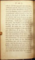 View image of 116 talbert; and the eagerness with which Mrs. Lessington and Mr. Hayward had adopted the views of Mr. Montalbert, though they knew her situation, were a combination of circumstances which seemed to leave no doubt in the mind of Rosalie but that her mother had been betrayed by some or all of those whom she considered as her best friends. Their motives were probably good; but Rosalie could not help reflecting, that had not such been their conduct, she might now have been the acknowledged daughter of her most tender and affectionate of mothers; she might have known and been blessed by the fondness and protection of her father; and they might in a happy union have effaced the remembrance of their early indescretion, for the death of Mr. Montalbert would soon have left his daughter at liberty, and her life would not have been passed in the miseries of such a marriage, nor her spirits have been overwhelmed with the consciousness of being the wife of one man while her whole heart was another's.
"I should not then, (said Rosalie, as she considered these events), I should not then have been despicable in the eyes of Montalbert's relations—I might have been received by his mother with pride and pleasure, from the hands of my own; but now I am an outcast, and have no right to claim the protection of any human being, unless it be thine, Montalbert, and thou art far, far from me!—Heaven knows whether we shall ever meet again!" A shower of tears fell from her eyes while she indulged these melancholy thoughts; but, from longer meditation, she was roused by a short note from Mrs. Vyvian, who informed her, that her daughters had just been with her; that they should now seldom be at liberty to meet, for that Miss Vyvian, who, for some reason or other, did not seem happy and satisfied with her sister, was to come to her mother during an excursion Mr. and Mrs. Bosworth were about to make to Scarborough.—"She is my daughter, (said
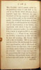 View image of 118 Mrs. Vyvian), and I cannot refuse her my protection—alas! I will fulfill to the end of my life the duties that have been imposed upon me. Hitherto the consciousness of having acquitted myself of a very arduous task, to the utmost of my power, has sustained me in many an hour of anguish; it will smooth the bed of death, and no inconvenience I can sustain, no ingratitude with which I may be repaid, shall for a moment weaken the resolution I have made to acquit myself to my own conscience......Come to me, however, my Rosalie, to-morrow, as Bab will not be here till evening; Mr. Vyvian stayed only a day in London. He is now gone into the west to visit the borough for which he is representative, and is afterwards to make I know not what tour, with I know not whom, which is likely to detain him all the summer. Alas! I dare not hope that the monotonous life I lead can be pleasant to Barbara, who probably comes with reluctance that will render us both equally
miserable. How differently, my Rosalie, could I indulge myself with having you always with me, would our hours pass; but I will not add a word more on this subject." Rosalie saw that, from this unlucky arrangement, she should be deprived of the consolation she might derive from the advice and conversation of her best friend, when she most wanted such comforts. The aversion that Barbara Vyvian seemed to have to her was even greater than that of Mrs. Bosworth; and on recollecting several circumstances that had happened since the estrangement the sisters had shown towards her, Rosalie could not but imagine that they knew, or suspected, her near relationship to their mother......Ingenuous and liberal as her own heart was, she imagined not that it was possible for envy only, malignant hatred of superior excellence and beauty, to call forth the ill-humour and provoke the ill-offices of these young women, though she had
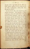 View image of 120already had a specimen of the effect of those odious passions in the behaviour of the Miss Lessingtons, whom she once thought her sisters. In this family she now seemed to be almost a stranger. The character of Mrs. Lessington, since the death of her husband, seemed totally changed; and her passion for cards, and for the society of the set of people among whom she now lived, absorbed almost every other feeling but her passion for money. To Rosalie she was not only become perfectly indifferent, but seemed wary of the task of affecting sentiments she did not feel; from the present situation of Mrs. Vyvian, it was probable she would never be able to increase the annual gift she had made as a consideration for adopting her daughter, and her former and long attachment to her, seemed, if not entirely forgotten, at least insufficient now to urge her to any exertions of friendship and attention. She seldom saw Mrs. Vyvian, and, when she
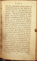 View image of 121 did, her conversation related entirely to the people with whom the latter held no intercourse, and her visit appeared to be always a matter of ceremony rather than of choice. Though the solicitude in which Rosalie was left was infinitely the most pleasing circumstance of her present residence, yet she could not but imagine that the style in which she was treated in the family must occasion suspicions of the truth: the difficulties of concealing for a series of years such a secret, appeared the more wonderful the longer she thought of it; but, from these meditations on the extraordinary events Mrs. Vyvian had related to her, she recovered herself only to reflect on what was to be her future fate. Her mother had been abandoned by the man to whom she had sacrificed her honour and her peace; and though probably it was to preserve her life and his own that this separation had been submitted to, though it was certain that compulsion had at first been used to bring about this cruel separation, and that reason and a respect
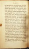 View image of 122for the object of his unfortunate love had afterward prevented Mr. Ormsby from making any attempt to write to her, Rosalie could not think, without extreme pain, that even such an attachment was not proof against time and absence. Mrs. Vyvian had said, that she believed that though Mr. Ormsby still lived, he had forgotten her entirely; she added, that she most sincerely hoped he had; but, as she said this, her tears fell more abundantly, and her heart seemed to feel all the bitterness that attends the conviction of being forgotten by those we have fondly loved. Rosalie thought that nothing could ever induce her to even say, that she wished to be forgotten by Montalbert. It was now some weeks since she had heard from him. There had even been time for an answer to Mrs. Vyvian's letter. Should he long delay answering it, what agonies of mind should she not be exposed to; she trembled to look forward to such a possiblitiy, and felt that it would be
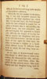 View image of 123difficult for her to exist long under doubts of Montalbert's affection. When she saw her mother in the morning, it was with increased concern she observed the deep dejection into which Mrs. Vyvian had sunk; the little strength which she had collected to enable her to relate to Rosalie what it was necessary she should know, was now exhausted, and, pale and languid, she appeared to sustain with difficulty the fatigue of leaving her bed to receive her daughters, who were to be with her at noon: the one to take leave of her again for some time, the other to become a resident in a house which offered scenes so different from those to which she had long been accustomed. As the sight of Rosalie seemed rather more deeply to affect than to relieve her mother, she shortened her visit, and returned to her usual home, where she passed the day entirely alone; Mrs. Lessington and her daughter being both in
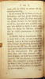 View image of 124town, and not likely to return till the following morning. In the evening she sat down to write to Montalbert, and had nearly finished her letter, when a maid (for there were only two female servants in the house) came to tell her, that there was a person at the gate who desired to speak to her; who, upon her asking his business, answered that he could communicate it only to herself. As Rosalie had no acquaitance likely to make such a visit, nor any business to transact, and as so near London there is always danger of admitting strangers, she bid the servant tell him, she could speak to no person with whose name and purpose she was unacquainted. The girl stayed for some time, and then returned with a piece of paper, on which was written with a pencil, "Be not alarmed—it is Montalbert, who, compelled to return in secret, has been to Mrs. Vyvian's, and finds persons with her before whom it is impossible for him to appear."
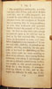 View image of 125 The mingled joy and surprise, not without some alloy of fear, with which Rosalie read this, may be easily imagined; but it would be more difficult to describe, in adequate terms, the transports of Montalbert on meeting after so long an absence, or with what tenderness and gratitude Rosalie learned the purpose of his journey. As soon as they were calm enough to converse upon it, he told her that as soon as he had received Mrs. Vyvian's letter, he determined to come over himself to England at every hazard.—"It was not very easy, (said he), to prevail on my mother, who has, unluckily for me, projects in her head for establishing my fortune, which made her more unwilling to allow for my absence; but a young Sicilian nobleman, with whom I was brought up, and who is distantly related to my mother, was exactly at that period returning to Sicliy for a few months. I communicated my distress to him, and he managed the difficulty so well, that I ob-
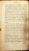 View image of 126tained a short leave of absence, and am now supposed to be with him in Sicily. A thousand circumstances may happen to betray me; but I trust much to the friendship and prevoyance of my friend to guard against detection at present; and, for the future, I know my Rosalie will not shrink from any trial of that affection which makes the happiness of my existence—even though a greater sacrifice were required of her than to quit her present abode." The answer that Rosalie gave to this was, that with him every place and every country would be equally pleasant to her. He then explained to her his views.—"Unable to live without you, (said he), I have never ceased, since I have been in Italy, to meditate on the means of conciliating my happiness, and the deference I owe my mother. That friend, of whom I have just been speaking, is now master of his fortune; he has offered me a small, but beautiful villa in
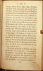 View image of 127Sicily, about seven miles from Messina, and not more than two and a half from the sea. There you may live, my Rosalie, unremarked and unquestioned; and there I can pass months with you, without incurring, on the part of my mother, any suspicion, or any other remonstrance, than must in every event arise from my refusal of the match she wishes to make for me: when, however, she finds I am determined, and loses her apprehensions to an English woman and a Protestant, I shall be left at liberty to wander about Italy occasionally as I used to do; and we may be happy at the present with each other, without risking the loss of that prosperity hereafter, in which it is the first wish of my heart to place you." This plan appeared to Rosalie not only practicable, but delightful. The unfeigned pleasure with which she embraced it seemed to redouble the satisfaction with which Montalbert expatiated on their future prospects: he appeared, indeed, to
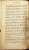 View image of 128have thought of every thing, and settled what should be said to persons in England, to account for her departure. It was to be given out, that Mrs. Vyvian had procured for her a situation in a foreign family of distinction, who were desirous of having a young Englishwoman as instructress to their daughters; an establishment, which, as Rosalie Lessington was left entirely without fortune, was extremely advantageous and desirable.—However improbable such an arrangement might appear to those who were acquainted with Italian customs and manners, Rosalie and Montalbert agreed, that there were none of that description among those who were likely to inquire of the Lessington family; she had appeared, indeed, so little in their societies, that it was probable she would soon be wholly forgotten. Mrs. Bosworth and Miss Vyvian were certainly more likely to inquire after her with more active malignity, and doubting any story that was at all unlikely to form
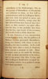 View image of 129conjectures to her disadvantage; but, as the journey of Montalbert, at this period, was unknown to them, as they had no communication with the Lessington famliy, and were both too proud to annex any consequence to Rosalie, except what she had derived from their fears of their brother's or their mother's too great affection for her, it was probable that when they saw her, and heard of her no more, they would cease to think about her. It was, however, a very inconvenient circumstance to them, that the presence of Barbara Vyvian prevented Montalbert's seeing her mother, with whom it was so necessary for him to consult. As he could not stay more than a week in England, there was not a moment to lose. Many purchases were to be made for Rosalie, as well as many precautions to be taken; and it was proper that Mrs. Vyvian and Mrs. Lessington should meet to adjust several points relative to a person in whom both were interested.
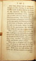 View image of 130After some debate how to obtain admittance to Mrs. Vyvian, it was agreed that this could be done only by the means of Mr. Hayward. To him, therefore, Montalbert immediately wrote, engaging him to meet him at a tavern early the followig morning; then reluctantly, and not without her repeating her remonstrances on the impropriety of his staying any longer, he took leave of Rosalie, and retired for the night to the house, where, in pursuance of his appointment, Mr. Hayward came to him the next day at six o'clock. They together contrived so well, that Mrs. Lessington was admitted to the apartment of her friend without any suspicion on the part of Miss Vyvian; and in a few days every necessary arrangement was made, and Rosalie ready to depart. There were in England only two persons, of whom to take leave for so long a time, perhaps for ever, gave her severe pain. These were her real mother, for whom her affection seemed to be greater
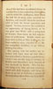 View image of 131than if she had been accustomed always to consider her in that endearing relationship, and the eldest Mr. Lessington, from whom she had for so many years received instruction, and towards whom she had been used to look for future protection and regard. To him, however, she could have no opportunity of saying farewell, as he was gone into Wales with a young man of fortune, from whom he had expectations of preferment. Rosalie dared not even write to him, as Mrs. Lessington, for some reason or other, objected to it; she was compelled, therefore, to go without bidding him adieu. Her parting with her mother was attended with many tears on both sides; but each wished to shorten a painful scene, which it was not safe long to continue, as Rosalie and Montalbert were introduced into the house by stealth. This sad farewell being over, they got into a hackney coach with their baggage, and being set down at an inn in Holborn, a quarter of the town where Montalbert was little likely
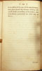 View image of 132 to be observed by any of his acquaintance, they there found his servant waiting with a post chaise according to his orders, and immediately proceeded on their way to Dover.
|
){kind=link}
){kind=link}
){kind=link}
){kind=link}
){kind=link}
){kind=link}
){kind=link}
){kind=link}
){kind=link}
){kind=link}
){kind=link}
){kind=link}
){kind=link}
){kind=link}
){kind=link}
){kind=link}
){kind=link}